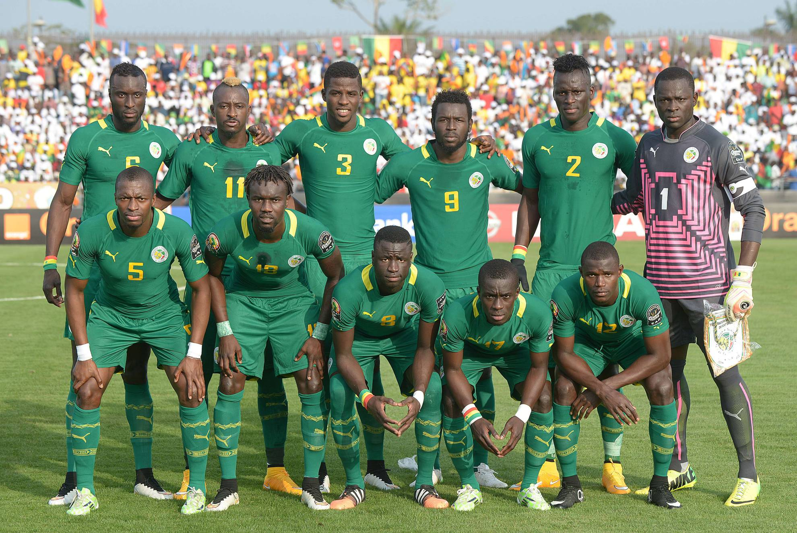

Ranking FIFA: 18° (octubre 2022).
¿Cómo se clasificó al Mundial? Venció en la llave decisiva a Egipto tras empatar 1-1 en el resultado global e imponerse 3-1 en la definición por penales.
Rendimiento en 2021 (G-E-P): 7-3-0 (21 GF, 6 GC, +15).
Rendimiento en 2022: 13-3-3 (34 GF, 16 GC, +18).
Edouard Mendy; Bouna Sarr, Kalidou Koulibaly, Abdou Diallo, Saliou Ciss; Cheikhou Kouyaté, Nampalys Mendy, Idrissa Gana Gueye; Ismaila Sarr, Famara Diedhiou, Sadio Mané.
Nacionalidad: senegalés.
Edad: 46 años.
Contratado: 5 de marzo de 2015.
Récord en el cargo (G-E-P): 54-17-12.
Títulos en el cargo: Copa Africana de Naciones 2022.
Victoria más notable: 2-1 a Polonia, 1° ronda del Mundial 2018
1930 Uruguay -
1934 Italia -
1938 Francia -
1950 Brasil -
1954 Suiza -
1958 Suecia -
1962 Chile -
1966 Inglaterra -
1970 México -
1974 Alemania -
1978 Argentina -
1982 España -
1986 México -
1990 Italia -
1994 Estados Unidos -
1998 Francia -
2002 Corea y Japón 7°
2006 Alemania -
2010 Sudáfrica -
2014 Brasil -
2018 Rusia 17°
